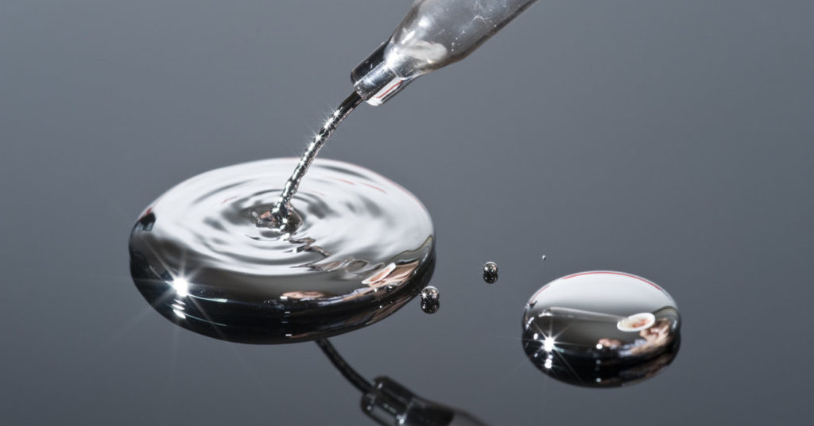

Золото
Ртуть (Hg, от лат. Hydrargyrum) — элемент шестого периода периодической системы химических элементов Д. И. Менделеева с атомным номером 80, относящийся к подгруппе цинка, 12-й группе (по устаревшей классификации — побочной подгруппе II группы). Простое вещество ртуть — переходный металл, при комнатной температуре представляющий собой тяжёлую серебристо-белую жидкость, пары которой чрезвычайно ядовиты, контаминант. Ртуть — один из двух химических элементов (и единственный металл), простые вещества которых при нормальных условиях находятся в жидком агрегатном состоянии (второй такой элемент — бром).

Ртуть – один из семи металлов, известных с древнейших времён в Индии, Китае, Египте (за 2000 лет до н. э.). Нередко её находили в самородном виде, чаще получали обжигом природной киновари. Ртуть и её соединения использовались в медицине, из киновари делали красные краски (вермильон). Древние греки и римляне использовали ртуть для извлечения золота и серебра (амальгамирование), знали о токсичности самой ртути и её соединений, например хлорида ртути(II) – сулемы. Алхимики считали ртуть главной составной частью всех металлов и предполагали, что из неё можно получить золото. Латинское название образовано от греческого ὑδράργυρος (ὕδωρ – вода и ἄργυρος – серебро; «жидкое текучее серебро»), данного в 1 в. н. э. Диоскоридом. Современное английское (mercury) и французское (mercure) названия ртути произошли от имени древнеримского бога торговли и посланника богов Меркурия (Mercurius; в алхимии ртуть обозначалась астрономическим символом планеты Меркурий). Выделение ртути в чистом виде описано Г. Брандтом в 1735 г.
Содержание ртути в земной коре 7,0·10–6 % по массе, в морской воде 0,03 мг/м3, в атмосфере 2·10–3 мг/м3. Ртуть относят к рассеянным элементам (в концентрированном виде в месторождениях находится только 0,02 % всей ртути); в природе встречается в свободном состоянии (ртуть самородная). Образует более 30 минералов. Основной рудный минерал – киноварь HgS. Минералы ртути в виде изоморфных примесей встречаются в кварце, халцедоне, карбонатах, слюдах, свинцово-цинковых рудах. В обменных процессах гидросферы, литосферы, атмосферы участвует большое количество ртути.
Ртуть получают главным образом обжигом киновари HgS при 700–800 °C. Восстановленная ртуть удаляется из зоны реакции с отходящими газами, очищается в электрофильтрах от взвешенных частиц и собирается в конденсаторах. Выход ртути более 80 %. Для получения технического продукта ртуть фильтруют через пористые перегородки, керамические фильтры, сукно, замшу, последовательно промывают растворами щелочей, азотной кислотой, растворами Hg(NO3)2 и перегоняют. Гидрометаллургическое извлечение ртути ведут обработкой киновари водными щелочными растворами сульфида или полисульфида натрия. Образовавшиеся растворы тиосолей ртути подвергают электролизу. Для получения особо чистой ртути используют четырёхстадийное электрохимическое рафинирование в электролизёрах с ртутными электродами.Ртуть – материал катодов при электрохимическом получении едких щелочей и хлора, применяется в полярографии, в производстве ртутных вентилей, газоразрядных источников света (люминесцентных и ртутных ламп), диффузионных вакуумных насосов, контрольно-измерительных приборов (термометров, барометров, манометров и др.); для определения чистоты фтора, а также его концентрации в газах. Соединения ртути используют в меркуриметрическом и меркурометрическом методах объёмного анализа, для чернения латуни, как компонент глазурей, в составе электролита в химических источниках тока, взрывчатых веществ (гремучая ртуть) и др.